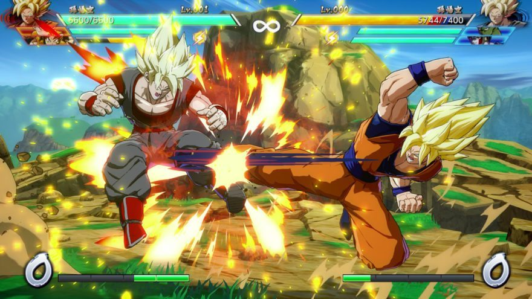
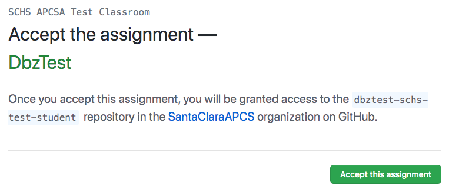
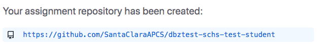
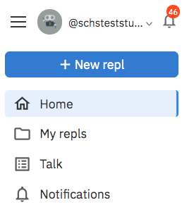
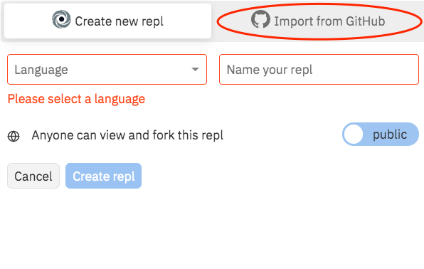
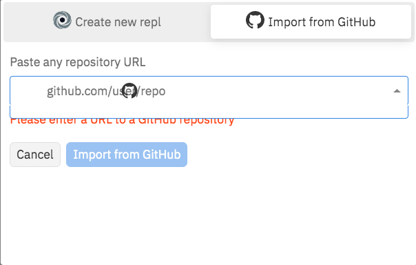
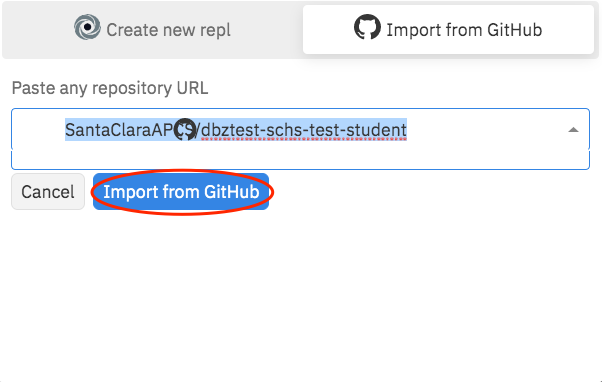
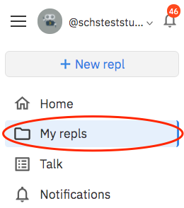
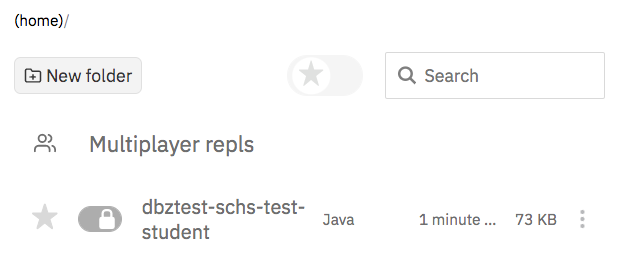

Dragon Ball Z is an anime series which features heroes who defend the earth from villains. For this project, you will use your Java skills to build a console game in the spirit of the Dragon Ball FighterZ game.

Your Dragon Ball Z game is a two-player game where a human player will compete against a computer player in an epic fight! Both players start the game with zero energy points and three life points. The game ends when one player reaches zero life points or after 30 turns.
Every turn, both players must choose one of the following moves:
Note: Players can only attack if they have charged up sufficient energy points.
The following table shows the result of a pair of moves chosen by two players:
Player 1 | Player 2 | Player 1 Result | Player 2 Result |
Charge Energy 🔋 | Charge Energy 🔋 | +1 energy point | +1 energy point |
Attack ⚔️ | Charge Energy 🔋 | -1 energy point | -1 life point, reset energy points |
Special Attack ⚡️ | Charge Energy 🔋 | -8 energy point | -3 life points, reset energy points |
Defend 🛡 | Charge Energy 🔋 | nothing | +1 energy point |
Attack ⚔️ | Attack ⚔️ | -1 life point, reset energy points | -1 life point, reset energy points |
Special Attack ⚡️ | Attack ⚔️ | -8 energy points | -3 life points, reset energy points |
Defend 🛡 | Attack ⚔️ | nothing | -1 energy point |
Special Attack ⚡️ | Special Attack ⚡️ | -1 life point, reset energy points | -1 life point, reset energy points |
Defend 🛡 | Special Attack ⚡️ | -3 life points, reset energy points | -8 energy points |
Defend 🛡 | Defend 🛡 | nothing | nothing |
When the game starts, the player and computer both start out with 0 energy points and 3 life points. Print out each player's points to start the game.
Starting the Dragon Ball Z Game! Player Energy Points: 0 Player Life Points: 3 Computer Energy Points: 0 Computer Life Points: 3
Prompt the player to select a valid move based on their energy points. If the player does not have enough energy points for an attack, do not prompt the player to attack.
Turn 1
Select from one of the following moves ("defend", "charge energy"): charge energy
Print out the moves that were chosen by the player and the computer as well as the life points and energy points.
Player Move: charge energy Computer Move: charge energy Result Player Energy Points: 1 Player Life Points: 3 Computer Energy Points: 1 Computer Life Points: 3
Prompt the player to select a valid move based on their energy points.
Turn 2
Select from one of the following moves ("attack", "defend", "charge energy"): attack
Print out the moves that were chosen by the player and the computer as well as the life points and energy points.
Player Move: attack Computer Move: defend Result Player Energy Points: 0 Player Life Points: 3 Computer Energy Points: 1 Computer Life Points: 3
Prompt the player to select a valid move based on their energy points.
Turn 3
Select from one of the following moves ("defend", "charge energy"): charge energy
Print out the moves that were chosen by the player and the computer as well as the life points and energy points.
Player Move: charge energy Computer Move: attack Result Player Energy Points: 0 Player Life Points: 2 Computer Energy Points: 0 Computer Life Points: 3
Once a player has lost all of their life points, the other player is named the winner and the game ends.
Player Move: charge energy Computer Move: special attack Result Player Energy Points: 0 Player Life Points: 0 Computer Energy Points: 0 Computer Life Points: 1 Computer Wins!
If neither player has lost all of their life points after 30 turns, the game ends as a tie.
Player Move: defend Computer Move: defend Result Player Energy Points: 0 Player Life Points: 3 Computer Energy Points: 0 Player Life Points: 3 No winner after 30 turns!








You may change the contents of the .env file to change which tests you want to run:
To begin the game, ensure that the energy points and life points for the player and computer are initialized.
Write a method with the following signature that takes the player's energy points, the player's life points, the computer's energy points, and the computer's life points. as input and prints out these points to the console.
public static void printPoints(int playerEnergyPoints, int playerLifePoints, int computerEnergyPoints, int computerLifePoints);
Player Energy Points: 0 Player Life Points: 3 Computer Energy Points: 0 Computer Life Points: 3
When you are done, commit your code and move on to checkpoint 2.
To begin a turn, print the turn number and prompt the user to enter a valid move.
Write a method with the following siganture that takes as input the player's energy point, prompts the user to enter a move, and returns the move the player entered.
public static String getUserMove(int energyPoints);
Select from one of the following moves ("defend", "charge energy"): defend
Write a method with the following signature that takes as input the computer's energy point and returns a randomly selected valid move for the computer.
public static String getComputerMove(int energyPoints);
Write a helper method that takes as input a valid move and returns the amount of energy the move will cost.
public static int getEnergyPointsCost(String move);
Write a method with the following signature that takes as input a player's valid move and an opponent's valid move and returns the amount of life points to deduct from the player.
public static int getLifePointsCost(String playerMove, String opponentMove);
Use the table from "Rules of the Game" to determine which scenarios will result in a life point deduction.
The getLifePointsCost method can be used to deduct life points for either the player or the computer.
Add a for loop to the main method to ensure that 30 turns can be played. Be sure to print the turn number before each turn.
Within the for loop, check the life points for each player. If any life points are lost, be sure to reset that player's energy points before the next turn.
If any player loses all of their life points, declare the other player the winner and end the game.
Player Move: charge energy Computer Move: special attack Result Player Energy Points: 0 Player Life Points: 0 Computer Energy Points: 0 Computer Life Points: 1 Computer Wins!
When the game begins, prompt the user to choose between three levels of computer difficulty.
Implement different strategies for each difficulty level to make the game harder or easier.
Choose difficulty from Easy, Medium, and Hard: Easy
When the game begins, prompt the user to choose between playing with a human or a computer.
If they select to play with a human, ensure that both players are prompted to select a move each turn.
Choose to play against a human or a computer: human
When the game begins, prompt for a human or computer for player 1 and player 2.
If they select a computer for both, play a simulated game
Choose a human or a computer for Player 1: computer Choose difficulty from Easy, Medium, and Hard for Player 1: Easy Choose a human or a computer for Player 2: computer Choose difficulty from Easy, Medium, and Hard for Player 2: Hard
When the game begins, prompt for the number of players and support 2 or 3 players.
Modify the game to work with three players (human or computer).
Enter the number of player (2 or 3):